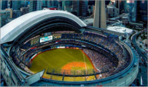
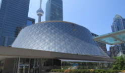

Toronto
Acercate y conoce el corazón de Canada.
Dejate atrapar por su espíritu cosmopolita
- Como llegar
- Mapa
- Transporte
- Compras
- Alojamiento
- Night
- Deportes
- Eventos
Una ciudad multicultural
Toronto es la ciudad multicultural por excelencia. La leyenda urbana -estadísticas que todo el mundo cita, pero que nadie es capaz de mencionar su procedencia- indica que más de la mitad de sus residentes no han nacido en Canadá y gran parte de la ciudad está formada por un conglomerado de barrios residenciales en los que se han establecido las diferentes comunidades, con sus correspondientes negocios, restaurantes y formas de vida. En un paseo de pocos kilómetros podemos ir del barrio griego al portugués, pasando por Chinatown, Little Italy o el barrio coreano. Toronto es un pequeño mundo en sí misma que nos ofrece una gran riqueza cultural, idiomática y gastronómica en una sola ciudad.
Toronto es también la ciudad más importante de Canadá -tanto por población, como por su papel de centro económico y financiero y nudo de comunicaciones-, aunque la capital del país es la vecina Ottawa. Sin embargo, sí es la capital y la ciudad de referencia de la región de Ontario. En la ciudad viven alrededor de tres millones de personas, cantidad que supera los seis millones si tenemos en cuenta toda su área metropolitana. Está situada a orillas del Lago Ontario, lo que le da cierta impresión de ciudad volcada al agua, aun estando a cientos de kilómetros del mar.
CARACTERISTICAS DE LA CIUDAD
-

Toronto se caracteriza por su destacada participación en multiples deportes profesionales. El Rogers Center es la casa de los Blue Jays, el equipo de Baseball.
-
La cultura culinaria de la ciudad tiene multiples aristas. Podemos encontrar comidas de todas partes del mundo, preparadas de manera típica o combinadas.
-

La ciudad esta compuesta por pequeños vecindarios. Muchos de ellos agrupan a gente de la misma procedencia. Hay un barrio griego, un barrio italiano, uno irlandés, etc.
-

Todos los años, miles de turistas llegan a la ciudad exclusivamente para deleitarse con la arquitectura vanguardista
RECORRIDO VIRTUAL
En este video podrás recorrer las calles y descubrir que es lo que te aguarda en tu visita